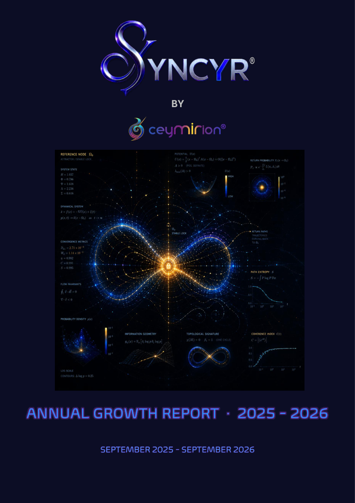

“Year One was the Architecture Year.”
Dr Bindunie Sirimanne Rowland · Founder & CEO
From the Annual Growth Report, 2025–2026
The founding question
The founder’s letter begins with a concern about continuity. An institution may approve an AI system at one moment, yet the models, context and infrastructure beneath that system continue to change. What should persist through those transitions—and how should it be measured?
That question shaped the company’s first year: defining an architecture for continuity, behavioural coherence, epistemic integrity and recovery, then building a record against which those ideas could be examined.
Building the foundation
The annual report brings together three connected strands of work: a programme of public research, an intellectual-property estate and a continuing record of founder-governed operation across model families.
At its 9 September 2026 reporting cutoff, it records nine UK patent applications, two international PCT pathways and six public research papers. These are the figures for that reporting period; subsequent developments belong in their own dated updates.
The company structure gives each strand a home. CEYMIRION retains the core intellectual property. SYNCYR is the operating company through which licensed applications, configurations and commercial delivery are developed.
From architecture to engineering
A central milestone in the report is the transfer of founder specifications into working implementations. It records seven core layers built in-house and connected to a live API, with testing progressing at different stages across the stack.
SEICS, the epistemic integrity layer, is reported as furthest through structured internal testing. Independent evaluation is identified as its next step. The distinction matters: implementation, internal testing and independent validation are separate milestones, and the Journal will record them separately.
The report also describes a longitudinal evidence programme observing drift, rupture, recovery, recurrence and transition. Its purpose is to examine behaviour across time and change, alongside the engineering work.
The next chapter
The second-year programme is organised around product hardening, independent evaluation, controlled deployment, commercial pilots, repeatable licensing and international development.
These are the next tests of the architecture: whether it can be reproduced, assessed and delivered in bounded institutional settings. Future Journal entries will follow those milestones as they occur, with the event date and the publication date made explicit.
Source document
Annual Growth Report
2025–2026
Revised edition incorporating the engineering update of 9 September 2026. This web article is an editorial summary; the original report provides the full company account.
Download the original reportPDF · 16 pages · 1.2 MB

Reporting cutoff: 09 September 2026. The report describes company-reported progress as of that date. The Journal publication date is recorded separately from the report cutoff.
Return to the Journal